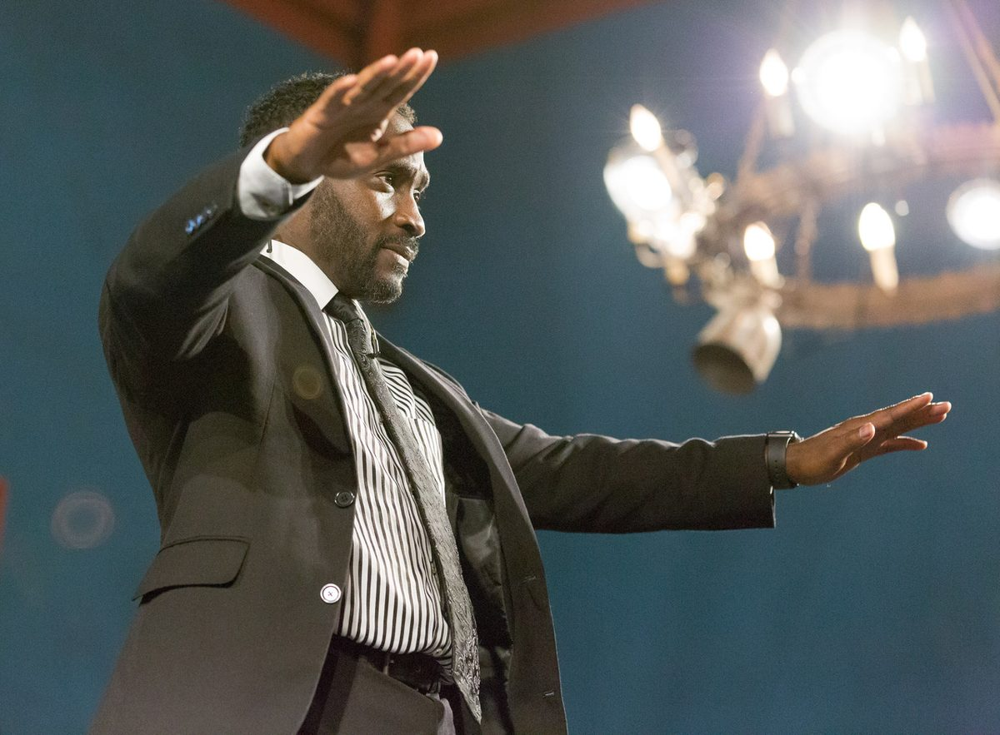
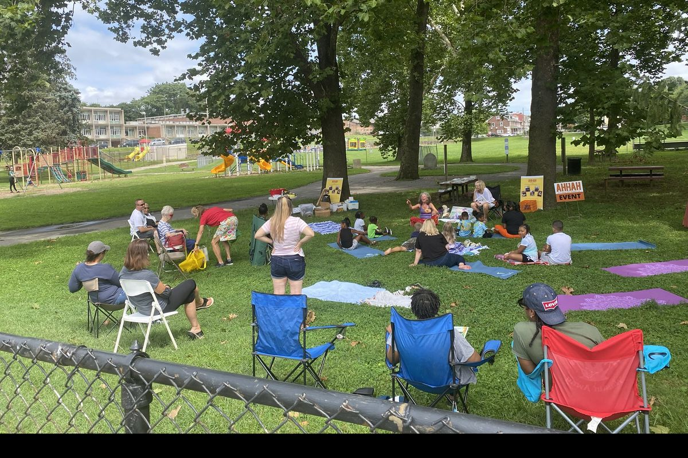
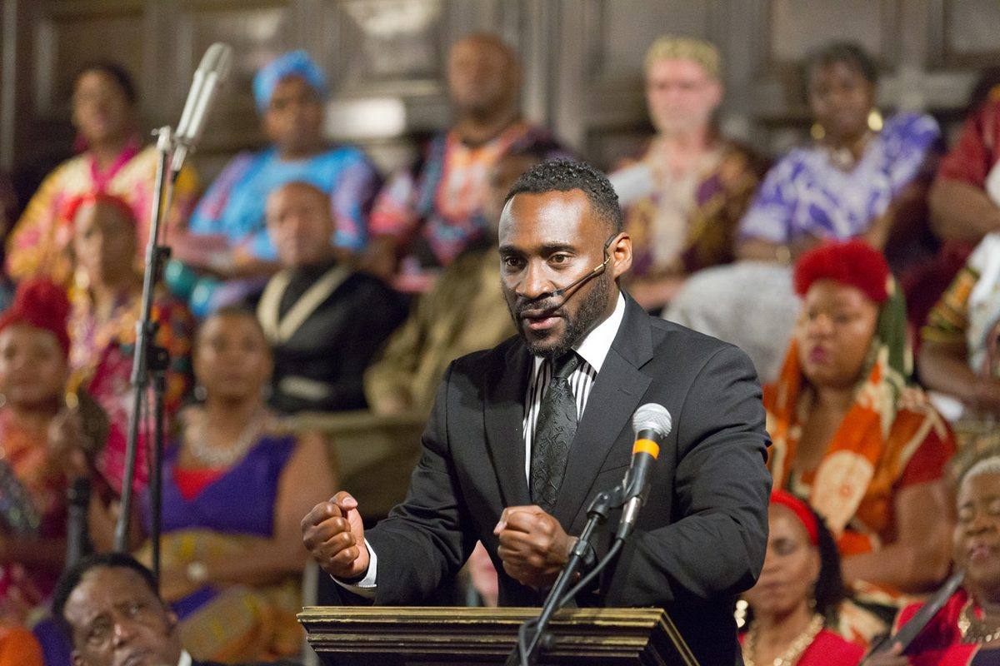

Strategy · Leadership · Community
I help mission-driven organizations turn relationships into resources and vision into lasting action
I'm Ajené Livingston, a community strategist, nonprofit leader, and theatre artist based in Coatesville, Pennsylvania, and working throughout Chester County, Greater Philadelphia, and beyond. I bring people, ideas, and organizations together to move good work forward, and I help turn that shared energy into a clear plan and lasting action.
When we work together, we achieve incredible results.
By the numbers
- $800KProgrammatic grant secured with support from Work Enclave results
- 1,500+Leadership program alumni kept engaged through the Arts + Business Council
- 40+Productions with Coatesville Cultural Society, with casts as large as 75
- 60%Of Work Enclave participants identified as candidates for local jobs with benefits
What I do
Three ways in, one thread through all of them
The work can look like philanthropy, board development, community engagement, or the arts. The common thread is helping people see what is possible, find their role in it, and move forward together.
Grow the support your mission needs
For nonprofits, community foundations, and cultural organizations with a meaningful mission and a resource plan that hasn't caught up. Together we build your case for support, map the relationships you already have, and set up a donor and sponsor calendar your team can keep.
- Case for support
- Stakeholder mapping
- Sponsor strategy
- Donor engagement
Leadership that can move with confidence
For executive directors, CEOs, board chairs, and leadership teams in growth or transition. We name the real question, make clear decisions, and give every board member and leader a role they can own.
- Board retreats
- Strategic plans
- Leadership coaching
- Supervisor practice sessions
Projects shaped with the community
For municipalities, foundations, cultural organizations, and cross-sector partnerships that need to hear from residents. I design the invitation, facilitate with care, and make sure people see how their input gets used.
- Community listening
- Meeting facilitation
- Cross-sector convenings
- Cultural programming

The arts in every room
Theatre taught me how to listen, adapt, and bring a group toward a common purpose
For more than 25 years I've worked as an actor, educator, and producer in the United States, Europe, North Africa, and the Caribbean. That practice comes with me into every board retreat, listening session, and partnership meeting. Strategy and creativity have never been separate for me. Both start with the same questions: what is possible, and how do we make it real?
Read my storyHow we work together
Good work starts with listening
Listen
We start with a conversation. I learn your mission, your relationships, your goals, and your constraints.
Find the real question
Together we look past the loudest symptom and agree on what actually needs to change.
Agree on the work
A focused scope, clear deliverables, and a timeline your team can carry.
Move together
I stay close enough to make the plan usable. You leave with decisions, owners, and tools.

In print
Contributing author, Nonprofit Sustainability: Strategies for Surviving & Thriving
I wrote the chapter on cultivating community rapport for this collection of essays by 31 nonprofit leaders. It introduces my RAPPORT framework for building public trust.
Read about the chapterIn the spotlight
Where people came together and things moved
-

Chester County OIC
Work Enclave program
A five-week paid work program. 60 percent of participants became candidates for local jobs with benefits, and the results helped secure an $800,000 grant.
-

Coatesville Parks and Recreation Commission
People. Programs. Parks.
A free, year-round calendar of park programs and events, a completed Palmer Park renovation, and a strategic plan framework for the City.
-

Coatesville Cultural Society
Community arts education
More than 40 productions, youth and after-school programs, and hundreds of school assemblies across dozens of schools.
What clients say
In their words
Client quote, one to three sentences, about what changed after working with Ajené.
There is always a good path forward